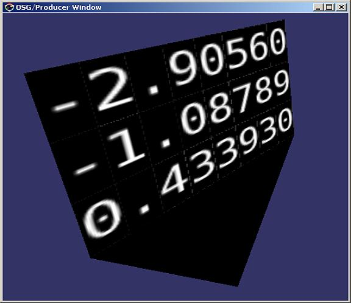
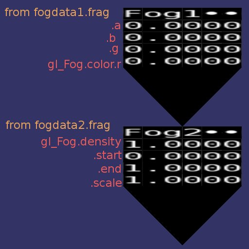
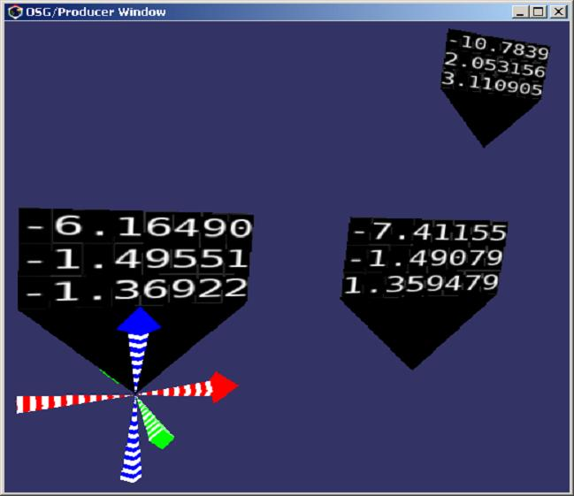
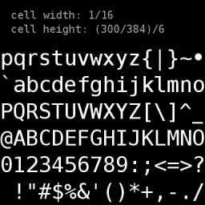

Download drawtext_2006-01-28.zip (xx KB)
The drawtext fragment shader renders numeric values inside a GLSL shader as strings of ASCII characters. It basically performs an sprintf() per fragment to dynamically generate texture coordinates into a glyph texture such as verasansmono.png Rather than using multipass/render-to-texture to create a dynamic texture, drawtext demonstrates uses a shader to generate dynamic texture coordinates into a static texture for single-pass rendering.
This implementation of drawtext uses OpenGL 2.0, OpenGL Shading Language (GLSL), and Open Scene Graph (OSG) It was developed on a 3Dlabs Wildcat Realizm 100 graphics accelerator running Windows XP.
drawtext is a stress test of a GLSL compiler and the GPU's shader processors, in that it is a large shader that pokes into areas that are definitely away from the typical hardware-shading system comfort-zone, such as dynamic looping and conditionals, integer calculations and indexing, and discontinuous texture coordinates.
From the OpenSceneGraph list, this message discusses using drawtext to display in the inner state of a GLSL predefined uniform structure, (e.g.: gl_Fog)
See also "GLSL Shading with OSG", presented at the OSG Advanced Rendering seminar at SIGGRAPH 2005.
drawtext and glsl_dataflag.osg are included in the OpenSceneGraph 1.0 Windows binary installer available at
http://mew.cx/osg/
They are maintained as part of the osgToy project at
|  | drawtext shader applied to a simple 3-triangle dataflag |
|  | Using drawtext to display members of the gl_Fog structure (annotations added manually with GIMP) |
|  | Multiple instances the dataflag can render per-instance values |
|  | the verasansmono.png glyph texture |
{kind=link}